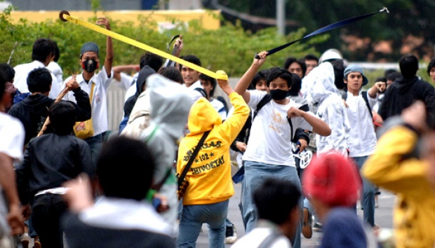

Kumpulan Berita terkini di Lampung.

KOMPAS — Rizky AS Al Qolili (16), seorang pelajar, tewas diduga akibat terlibat tawuran di Kota Bandar Lampung, Lampung, Sabtu (4/5/2024). Hingga kini, polisi masih mengejar para pelaku dan mendalami motif penganiayaan yang menewaskan korban.
Pringsewu – Seorang remaja putri menjadi korban kekerasan oleh rekan sebayanya. Video aksi perundungan yang diduga terjadi di Kabupaten Pringsewu tersebut viral di media sosial. Berdasarkan penelusuran, peristiwa bullying ini terjadi pada Jumat malam (18/4) di beberapa lokasi di wilayah Kecamatan Gadingrejo.
Polda Lampung mengungkap kasus penipuan dan penggelapan dengan modus menjanjikan kelulusan sebagai Bintara Polri. Pelaku, Mar’atun Solihan (45), diduga meminta uang hingga Rp1,037 miliar dari korban, Rika Setiyawati (42), dengan iming-iming bisa meloloskan anaknya dalam seleksi Bintara Polri T.A. 2024. Ironisnya, anak korban tak lolos, dan uang yang diserahkan tak kunjung dikembalikan.

Sebanyak tiga orang meninggal dunia dalam bencana banjir bandang akibat hujan deras yang melanda wilayah Panjang Kota Bandar Lampung, Provinsi Lampung. Ketiga jenazah telah dievakuasi Badan Penanggulangan Bencana Daerah (BPBD) Provinsi Lampung. "Tiga orang meninggal dunia sudah dilakukan evakuasi oleh Tim Reaksi Cepat (TRC) BPBD Bandarlampung," kata Humas BPBD Provinsi Lampung Wahyu Hidayat, dilansir Antara, Senin (21/4/2025).a
Provinsi Lampung berhasil meraih Penghargaan Anugerah Parahita Ekapraya Kategori Nindya dari Kementerian Pemberdayaan Perempuan dan Perlindungan Anak (PPPA). Penghargaan diserahkan langsung oleh Menteri PPPA I Gusti Ayu Bintang Darmawati kepada Gubernur Lampung yang diwakili oleh Kepala Dinas Pemberdayaan Perempuan dan Perlindungan Anak (PPPA) Provinsi Lampung, Fitrianita Damhuri, di Gedung Metro TV Lt.3 Kebon Jeruk Jakarta Barat, Selasa (19/12/2023). "